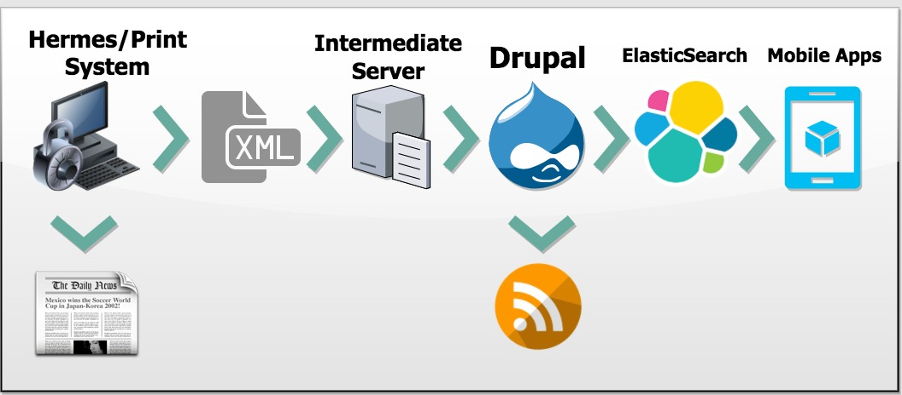

SPH DigitalContent Management Solutions
Evolution of our CMS
Started using Drupal in 2012
Progressive Iteration
Old site in Vignette
BT and ST was built in Drupal 6 by Mavenlab 2011
Yourhealth in D7
BH first full site in D7.. hermes workflow (print to digital) improvements
Singapolitics, first responsive site in SPH built in d7
Technical Maturity/Confidence .. built BT in 2014
TNP migration
ST, workflow improvements, image mnmgt, containers
tnp lots of improvement
stirr D8
Common Normalised Schema
Working on multiple brands with different stakeholders, we realised the need to start standardisation
Editor Empowerment
To efficiently support several titles, we need to help content creators navigate and learn the cms with as little support as possible
whenever possible, enable our users to complete the mundane administrative tasks
expose information that can help them make the necessary editorial decisions
Layout and Content Curation
empower content creators to package groups of articles and build landing pages
double edged sword
Push for Style Guides and Pattern Libraries
front end style guides documents the visual language and logical elements in a website
gives meaning and purpose to typography, color swatches, graphics, buttons, grids, etc
pattern library - reusable components that can be combined for different needs: carousels, story cards, headers, accordions
must work closely with designers to build an effective style guide
Systems Architecture
Cite ST as standard architecture
Rely heavily in caching on several levels (CDN, Varnish, Memcached)
admin site is protected from public access
Publishing Workflow
improved throughout the years
from Print stories sent to Drupal after offstone
to breaking news sent instantly to drupal for quick publishing
From Hermes to Drupal to Mobile Apps and beyond

consists of several steps
Distributed Content
step further beyond our ecosystem
Alignment of Goals and Skills
Flexibility vs Robustness
Automated vs Manual
different targets (ad revenues, budget, pageviews, elegant code, zero bugs, minimal maintenance, security)
varied skill levels means different levels of understanding on what must be prioritized
a healthy balance of automation and manual work is crucial
Content Model and Strategy
Content must be able to stand alone and be experienced completely regardless of what medium was used to obtain it
letting go of a print mind set that is heavily dependent on visuals is critical to achieving this
ST inspiration from The Guardian, BT inspiration from NYT but content strategy never truly considered
Yesenia Perez-Cruz, design director of Vox Media shared how they were able to come up with Flexible Design System for Vox media which is used on multiple sites like Vox, SBNation, The Verge, Polygon, Eater, etc
sometimes focus is more on the web publishing part which takes the resources from the content management part which in the end will lead to a very messy content system
Fragmented Solutions
Multiple Brands - Different Solutions
No single vocabulary
With several independent agile teams, solutions are tailor-made.
Best practices are not shared
Mistakes may be repeated by other teams
No standard solution so working with other parties can become difficult
Different brands with very similar requirements use different ways of calling the same things
An initiative to standardise is needed before we branch out further...
AX (Author Experience)
Training the CMS - how to make the CMS less scary for content creatorsOptimised editorial workflow is an opportunity to unburden the CMS from doing unnecessary heavy lifting
often times it is hard for editors to describe their pain points with CMS's
bad AX leads to frustration
it's not working, i guess we should redesign but then it turns out the problem is actually with workflow
they may find products/vendors that promises to provide all these features but does not truly understand what the problem is to begin with but just like in every relationship... don't trust them if they promise you everything
author training for features requested but never again use
it is a skill that needs to be used and honed
worse when they come up with repurposed solutions
factor in cost of bad AX overtime
uat is not a step in the process
What we should look forward to
Drupal 8
Currently we have two sites in D8
only familiar with Stirr
Stirr has very basic requirements
What Drupal 8 offers
based on Symfony, following better standards (MVC)
significantly faster and less bloat
Development and Release Cycle
Released Nov 2015 .. over 2 years old
Complete rewrite
Solutions in D7 will have to be rebuilt to work in D8
Past Milestones
Media API
Layout Discovery API
8.4 released last October
Crucial modules like Media still fairly basic
Current Development Cycle
Workflow
Migrate
Layout Builder
API First
Are we ready for D8?
Yes and No
It is critical that we migrate all our D7 sites before security fixes end for D7
Lots of the solutions we have deployed on our current sites are dependent on modules not yet available/matured on d8
must rethink these solutions
path forward may be decoupled and headless solutions
Decoupled and Headless Solutions
drupal is excellent CMS but poor front end, heavily dependent on caching
TodayOnline and FT as samples of headless solutions
needs a right reason, not just because it is new or because company A is doing it
needs increased technical expertise on several new technology
thinning expertise layer
may take longer time to deal with bugs because of several systems involved
a bad design can be critically
there's a reason why this is becoming a common practice
Distributed Content in Steroids
End product is no longer the website or the mobile app
It has always been the content
Build applications as if you have to support it forever and start again from scratch tomorrow